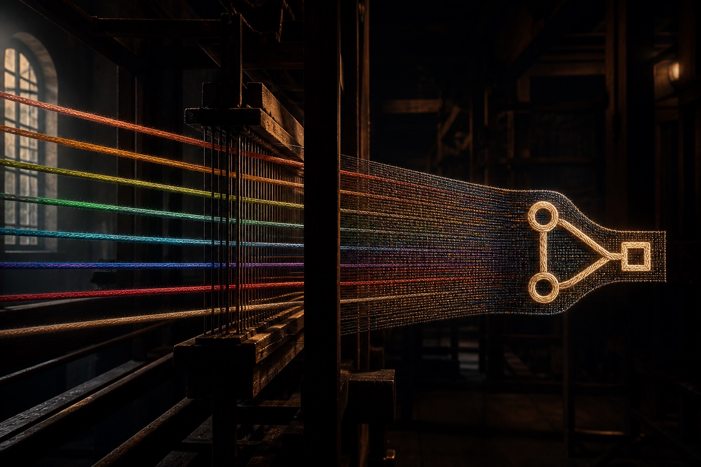

Install Loomwright
In Terminal. /plugin is a chat slash command — zsh will treat it as a path and fail.
claude plugin marketplace add vikashruhilgit/loomwright claude plugin install loomwright@atelier
v15.14 · Never silently merges
The mill that weaves a raw goal into a reviewed pull request. Plan first. Work in parallel. A human still merges.

Launch Pad turns a messy goal into a reviewed brief — feasibility, file impact, subtasks — before Supervisor touches the repo.
Workers run in git worktrees. Overlapping files wait. Merges are ordered. You do not get a pile of conflicting branches.
Code review, optional red-team, dual-agent QA, and a self-heal pass on the PR. Loomwright never auto-merges unless you opt in on a trusted path.
Lessons, house rules, and the System Twin are advisory and human-gated. CLAUDE.md stays the authority. Memory cannot promote itself.
In Terminal. /plugin is a chat slash command — zsh will treat it as a path and fail.
claude plugin marketplace add vikashruhilgit/loomwright claude plugin install loomwright@atelier
/setup is a dashboard, not a wizard that overwrites you. Check observability, notifications, Twin, Beads, then turn on only what you want.
/setup
One new goal: /autonomous. An existing PR: /review-pr. A pile of stories: /automate. Do not start all three at once.
/autonomous "add a daily challenge that resets at midnight UTC"
This is foreground-assisted, not fire-and-forget. Save or refine the brief. Answer rubric gates. Desktop banners fire when the mill needs you.
A healed PR is still an open PR. Read the diff. Merge it. Then run /dreaming after a week so the mill keeps the lessons you actually want.
/review-pr https://github.com/you/repo/pull/42 # bounded review → fix → re-review. Never merges.
Recommended first play
Use /autonomous when you have one requirement and you want Launch Pad + Supervisor chained, with stacked PRs if it takes more than one pass.
/autonomous "players can retry a daily challenge without losing the streak"
Highly recommended once the first PR lands. These are the plays that make Loomwright more than a task runner.
Overnight a queue
Turn a prompt, a folder of stories, or a backlog doc into a queue. Each item runs autonomous → review drain. Auto-merge stays off unless you pass a trusted gate.
Attack the merge
Adversarial pass on auth, payments, migrations, hooks, and agent prompts. Advisory. It finds the failure class before production does.
Test like a team
Risk map first, then Playwright generation with a debate loop. Use this on anything a user can click — not on a one-line typo fix.
Write the problem
Messy idea in, stories with acceptance criteria out. Add --brainstorm when the team is arguing and you need five expert lenses to fight it out.
Compound the craft
Distill session logs into lessons you accept one by one. Encode house rules so workers read them while doing the work, not only on review.
Inherit the mill
Two-minute catch-up for a teammate. A local scoreboard of heal rate, Twin growth, and whether last week actually got better.
See the blast radius
Per-subsystem contracts, hash-chained provenance, blast-radius at plan time. Advisory today. The north star is a mill that already knows this repo.
Keep the graph
One-way projection of runs, Twin contracts, and lessons into a vault you own. Nothing leaves the machine. The vault never becomes the engine.
Shipped
Plan-first Launch Pad, parallel Supervisor, review-and-heal, stacked autonomous loops, automate queues, advisory Twin, dreaming, insights, house rules. You still merge.
In the warp
Run the software in the heal pass. Playwright for web apps. Headless loops against a corpus. A hard pass/fail — not a vibes score — before anything is allowed to gate.
Evidence-gated
Flip advisory conformance to a real gate only after the benchmark has caught real regressions without a false-positive habit. No calendar flip.
Four guardrails first
A watcher that can open PRs unprompted — cadence expiry, per-run budget, circuit-breaker, heartbeat. Not started. Highest-risk rung. Intentionally last.
Director model
You set intent and approve outcomes. Diff-review becomes optional because the mill already proved the behavior. Everyone else rents a coder who starts cold every morning.
Add it from GitHub in Terminal. Do not paste /plugin into zsh — that is a Cursor / Claude Code chat command.
claude plugin marketplace add vikashruhilgit/loomwright claude plugin install loomwright@atelier
Or type the same two lines in a Cursor / Claude Code chat, starting with /plugin instead of claude plugin. Source: github.com/vikashruhilgit/loomwright
# then, in the repo you actually want to ship /setup /autonomous "the next thing your users can feel"